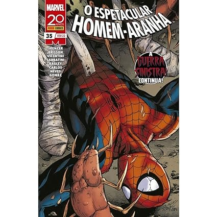

<html lang="en">

</html>

<head>
    <meta charset="UTF-8">
    <meta name="viewport" content="width=device-width, initial-scale=1.0">
    <link rel="stylesheet" href="pagina.css">
    <link rel="website icon" type="png" href="imagens/logo.png">
    <link rel="stylesheet" href="css-geral.css">
    <title>Pagina principal</title>
</head>

<body>
    <header>
        <div class="container">
            <h1>Bem-vindo à Manga Haven</h1> <a href="../tela-inicial/pagina-principal.html"></a>
            <nav>
                <ul>
                    <li><a href="../tela-inicial/pagina-principal.html">Home</a></li>
                    <li><a href="../tela-inicial/sobre-site.html">Sobre</a></li>
                    <li><a href="../tela-de-login/tela-de-login.html">Sair</a></li>
                </ul>
            </nav>
        </div>
    </header>
    <br><br><br><br><br><br><br><br><br><br><br><br><br><br>
    <main>
        <section class="produtos" id="dc">
            <div class="container">
                <h1> Homem-Aranha</h1>
                <div class="grid-produtos">
                    <div class="item-produto"> 
                    </div>
                </div>
            </div>
            <div class="item-produto">
                <h5>O Espetacular Homem-Aranha - 35</h5><br>
                <h5>Avalições:★★★☆☆(392)</h5><br>
                <h5>Detalhes:</h5>
                <p>Autor:Roger Stern</p>
                <p>Ano de Lançamento: 1989 </p>
                <p>Descrição: No 35º volume de O Espetacular Homem-Aranha, escrito por Roger Stern, Peter Parker
                    enfrenta novos desafios enquanto lida com suas responsabilidades como herói e sua vida pessoal. Este
                    volume destaca-se por suas intrincadas tramas e desenvolvimento de personagens, mantendo a emoção e
                    a ação que caracterizam a série. </p> <br>
                <a href="https://www.amazon.com.br/Espetacular-Homem-Aranha-35-Nick-Spencer/dp/655960571X"
                    target="_blank">Mais
                    Detalhes</a>
                <br>
                <h5>Sobre:</h5>
                <p>
                    A surpreendente saga Guerra Sinistra continua a toda, com dois dos mais terríveis grupos de vilões
                    lutando entre si... e, claro, contra o Aranha! Mas qual é o papel do cruel Condenado nisso tudo? Não
                    queremos estragar sua surpresa, mas pode ter certeza de que não é nada bom! E confira também nessa
                    edição: Peter Parker e Miles Morales estrelando uma aventura em plano Natal da cidade de Nova York
                </p><br>
                <h4 id="valor">R$20,00</h4><br>
                <a href="../carinho-de-compras/homem-aranha.html">Adicionar ao carinho</a><br>
            </div>
        </section>
        <div>
        </div>
        </section>
    </main>

    <footer>
        <div class="container">
            <p>&copy; 2024 Manga Haven</p>
        </div>
    </footer>
</body>

</html>